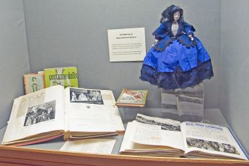

Mrs Widdows was born on June 8th 1903 at Healey Heights in Burnley. In October 2003 she donated her collection of figurines in historical costume to Towneley. They were made in the 1940s and 1950s and Mrs Widdows showed them all over Britain and Europe until about 1980.
After her death in 2006, her daughter donated the books used by her mother to research the historical details of the costumes together with scrapbooks and photographs related to their display. There remain 60 dolls with their original costumes plus 5 others in an incomplete state.
Documents
- (A) 27 books, numbered BURGM/wid001 to wid024 and wid040 to wid042
- (B) 4 scrapbooks, numbered BURGM/wid025, wid026, wid038 and wid039
- (C) Magazines and pamphlets, numbered BURGM/wid027 to wid036
- (D) Photographs numbered BURGM/wid037.1 to .4 ~(stored with dolls)
- (E) Letters numbered BURGM/wid043.1 to .4
- (F) Typescript numbered BURGM/wid044
- (G) Costume leaflets and post cards [BURGM/wid045 series]
- (H) Loose cuttings illustrating costume [BURGM/wid046 to wid049 series]
- (I) Loose news cuttings [BURGM/wid050 series]
- (J) Letters relating to donation of dolls and documents [BURGM/wid099 series]
- (K) Doll making materials and patterns [BURGM/wid100+ series] (stored with dolls)